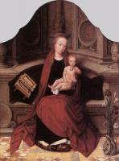
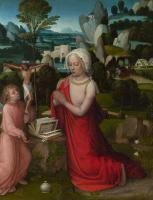
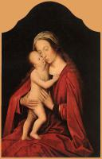
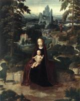
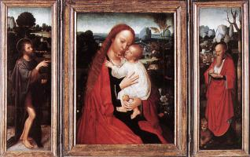

| Месса Святого Григория Великого
1510-50
|
|  | Богородица с младенцем на троне
1510
|
|  | Магдалина на природе
1510-25
|
 | Богоматерь семи скорбей
1518-35
|
|  | Богородица и младенец
1520
|
 | Богородица и младенец
1520
|
 | Адам и Ева
1520
|
 | Христос в терновом венце и Скорбящая дева
1530
|
 | Месса Святого Григория
|
|  | Отдых во время бегства в Египет
|
 | Отдых во время бегства в Египет
|
 | Архангел Святой Михаил, Святой Андрей и Святой Франциск Ассизский
|
 | Стигматизация святого Франциска
|
|  | Триптих
|